p is the proportion of points with label 1 in some node in a decision tree. Which of the following statements are true?
As the value of p increases from 0 to 1, the impurity of the node increases.
As the value of p increases from 0 to 1, the impurity of the node decreases.
The impurity of the node does not depend on p.
p = 0.5 correspond to the case of maximum impurity.
Q4MCQ2 marks
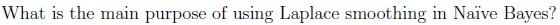
To prevent numerical errors when calculating the variance of Gaussianfeatures.
To ensure that unseen categorical feature values receive small but nonzeroprobabilities.
To strengthen the model’s predictions by increasing the weight of certainfeatures.
To balance the likelihood values of all features before computing posteriorprobabilities.
Q5MCQ4 marks
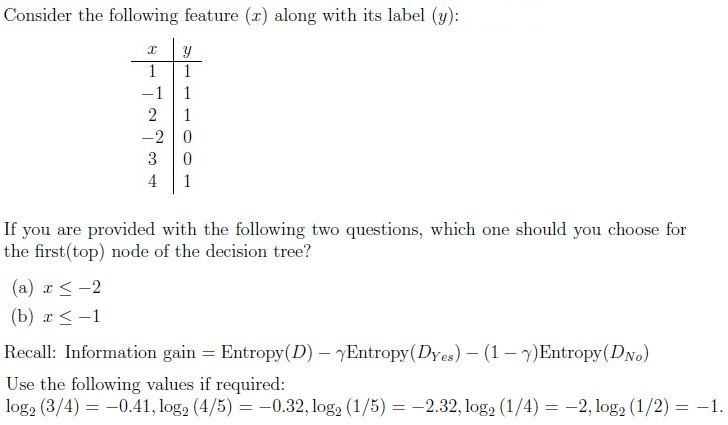
(a)
(b)
Insufficient information
Q6MSQ3 marksselect all that apply
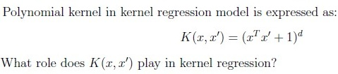
It ensures that the regression model remains linear.
It computes the similarity between data points in a transformed feature space.
It allows the model to capture non-linear relationships by mapping data to ahigher-dimensional space.
It helps in reducing the variance of the model.
It minimizes the loss function in regression problems.
Q7MSQ3 marksselect all that apply
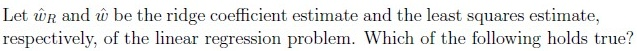
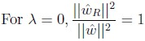
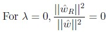
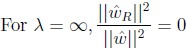
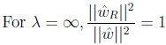
Q8SA4 marks
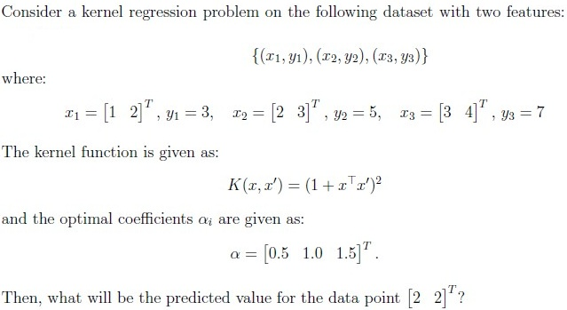
Q9SA4 marks
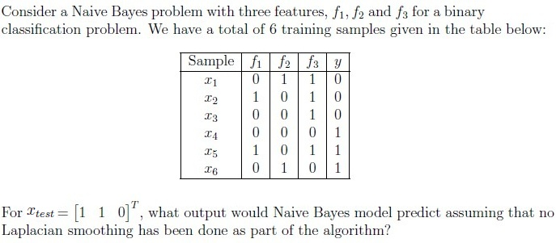
Comprehension passage - the questions below it refer to this
Based on the above data, answer the given subquestions.
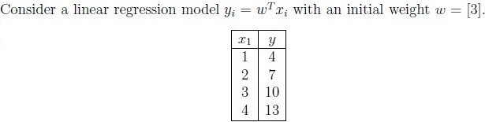
Q10SA3 marks
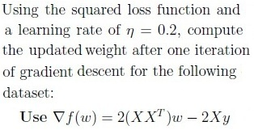
Q11SA2 marks
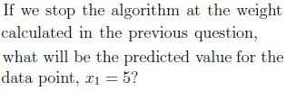
Comprehension passage - the questions below it refer to this
Based on the above data, answer the given subquestions.
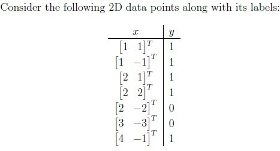
Q12SA2 marks
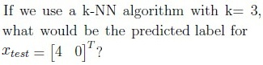
Q13SA3 marks
Compute the Leave-one-out cross validation (LOOCV) error for the 3- nearest neighbour (3-NN) algorithm on this dataset. Enter the answer correct to two decimal places.
Q14MCQ2 marks
Is it possible to reduce the cross-validation error obtained in the previous question by changing the label of certain points?
Auto-generated summary from the source site. Handy as a checklist; the lessons above explain each idea from scratch.
Summary of Core Topics, Concepts, Principles, and Equations
1. Ridge Regression
Concept: Ridge regression is a regularized version of linear regression that includes a penalty term to prevent overfitting.
Optimization Problem:
w∈Rnmini=1∑n(wTxi−yi)2subject to∥w∥2≤θ
Key Points:
Ridge regression shrinks the coefficients to reduce variance.
The ridge coefficient estimate w^R is given by:
w^R=(XTX+λI)−1XTy
For λ=0, w^R=w^ (least squares estimate).
For λ=∞, w^R≈0.
2. Naive Bayes Classifier
Concept: Naive Bayes is a probabilistic classifier based on Bayes' theorem with an assumption of independence between features.
Parameters: For a k-class classification problem with binary features, the number of parameters to be estimated is 6k−1.
Laplace Smoothing:
P(xi∣y)=Ny+α⋅VNxi∣y+α
Purpose: To address the problem of zero probability estimates for unseen feature values.
3. Decision Trees
Concept: Decision trees are used for classification and regression tasks.
Impurity Measures: Gini impurity and entropy are common measures of node impurity.
Information Gain:
Information Gain=Entropy(D)−γEntropy(DYes)−(1−γ)Entropy(DNo)
Key Points:
Maximum impurity occurs at p=0.5 for binary classification.
Decision trees split nodes based on the feature that provides the highest information gain.
4. Kernel Regression
Concept: Kernel regression is a non-parametric method to capture non-linear relationships.
Kernel Function:
K(x,x′)=(xTx′+1)d
Role of Kernel: Computes the similarity between data points in a transformed feature space.
5. k-Nearest Neighbors (k-NN)
Concept: k-NN is a simple, instance-based learning algorithm used for classification and regression.
Prediction: For a test point, the label is predicted based on the majority class of its k nearest neighbors.
Leave-One-Out Cross-Validation (LOOCV): A method to evaluate the performance of the model by leaving one data point out as the test set and using the rest as the training set.
6. Gradient Descent
Concept: An optimization algorithm used to minimize the loss function in linear regression.
Update Rule:
w=w−η∇f(w)
where η is the learning rate and ∇f(w) is the gradient of the loss function.